Hansa / Knowledge Stage V3.1 / storyboard
The graph is not the destination.
The decision is.
Nine desktop frames plus two state alternatives, captured from the isolated review prototype and the separate public projection at 1440 × 960. Every frame is technical-review evidence, not a published claim and not an accessibility or scientific audit.
Technical review · human pending
The nine frames
Candidate review unless marked otherwise
-

1 · Timeline entry
Latest recorded edition selected. Today, 1 November, is present and marked as having no edition, so the zero-card path is reachable from the first screen.
Data class Candidate review State date 2026-10-26 · intent understand Proves Date-led entry and an honest quiet day
-
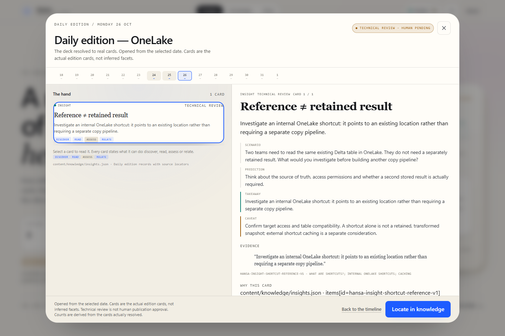
2 · Dealer open
One resolved card, not a facet estimate. The hand count, the rail highlight and the reader agree, and the card carries its own review state.
Data class Candidate review Deck daily:2026-10-26 · 1 card Proves The Dealer contract renders resolved decks
-
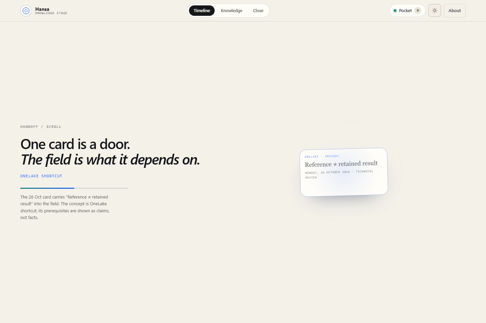
3 · Scroll handoff at midpoint
Scroll progress 0.5. The token is shrinking into the field while the date and review state remain at 0.7 opacity on the left. The handoff is scroll-linked, not timed.
Data class Candidate review State CSS progress 0.5 · opacity 0.7 Proves Progress-driven handoff
-
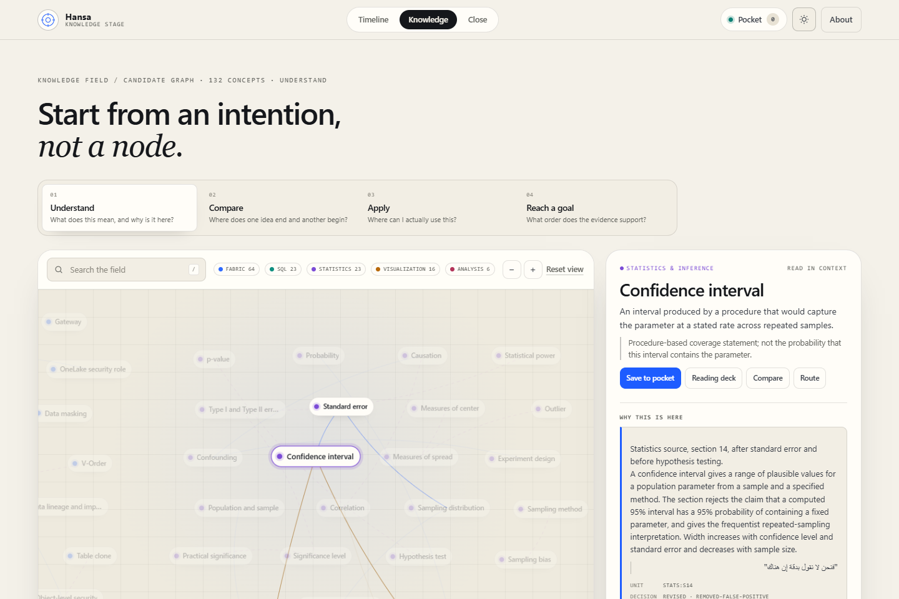
4 · Understand focus
Confidence interval selected. The field dims to the concept and its recorded neighbourhood; the inspector lists prior and next branches with the claim behind each one.
Data class Candidate review State concept:stats:confidence-interval Proves Intent-led inspection with honest neighbourhood
-
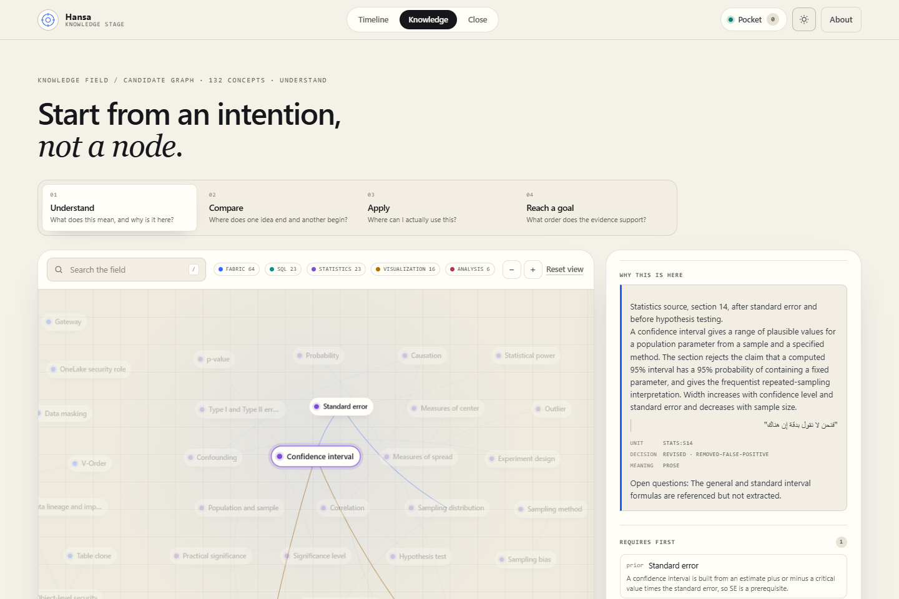
5 · Why connected
Parent context, the reading, a verbatim quote in its original direction, the unit id, the decision and the essential meaning. Arabic evidence renders right-to-left without breaking the layout.
Data class Candidate review Unit stats:s14 Proves A connection can be traced to a unit and a quote
-
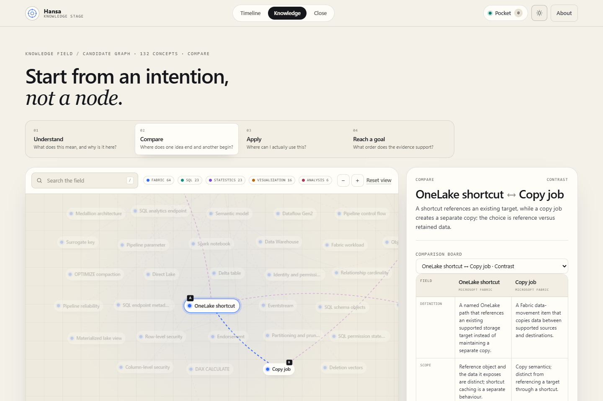
6 · Comparison Desk
OneLake shortcut ↔ Copy job: the changed condition, shared prerequisites and the reason the contrast is claimed, with a selector for the other board that includes the selected concept.
Data class Candidate review Board assert:ia:fabric-shortcut-copy Proves Comparison is a first-class intent
-
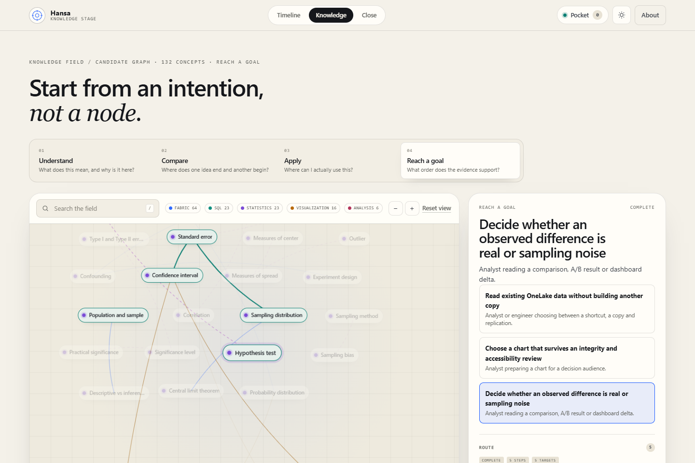
7 · Goal route
“Decide whether an observed difference is real or sampling noise”: five steps in dependency order, each with a reason, domain badge, recorded conditions and a local self-report toggle. Three alternatives stay visible.
Data class Candidate review Route goal:ia:is-the-difference-real · 5 steps · 0 gaps Proves Topological ordering with per-step reasons
-
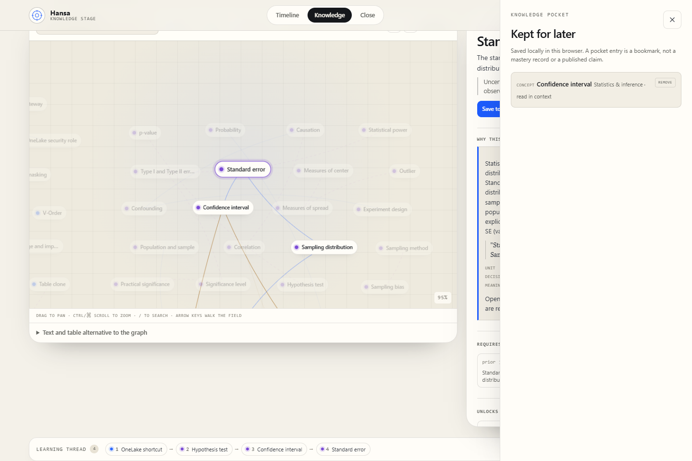
8 · Pocket and thread
A saved concept in the Pocket drawer, the visited-concept thread underneath, and the live inspector still readable behind it.
Data class Local browser state State 1 pocket item · 4 thread chips Proves Local capture and a visible learning thread
-
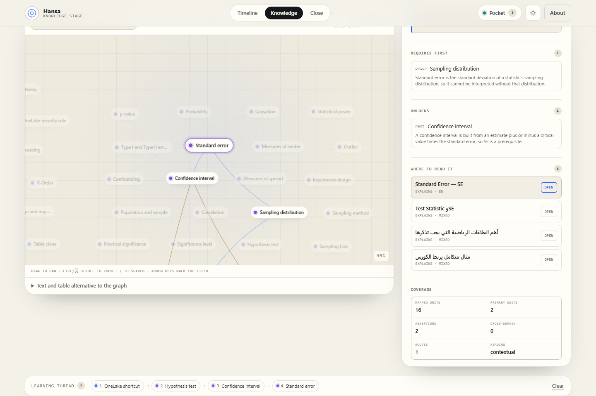
8b · Return from a resource route
The prototype reports the application route and source locator instead of faking navigation, then restores the selected concept.
Data class Candidate review State concept:stats:standard-error restored Proves No simulated navigation; context survives
-
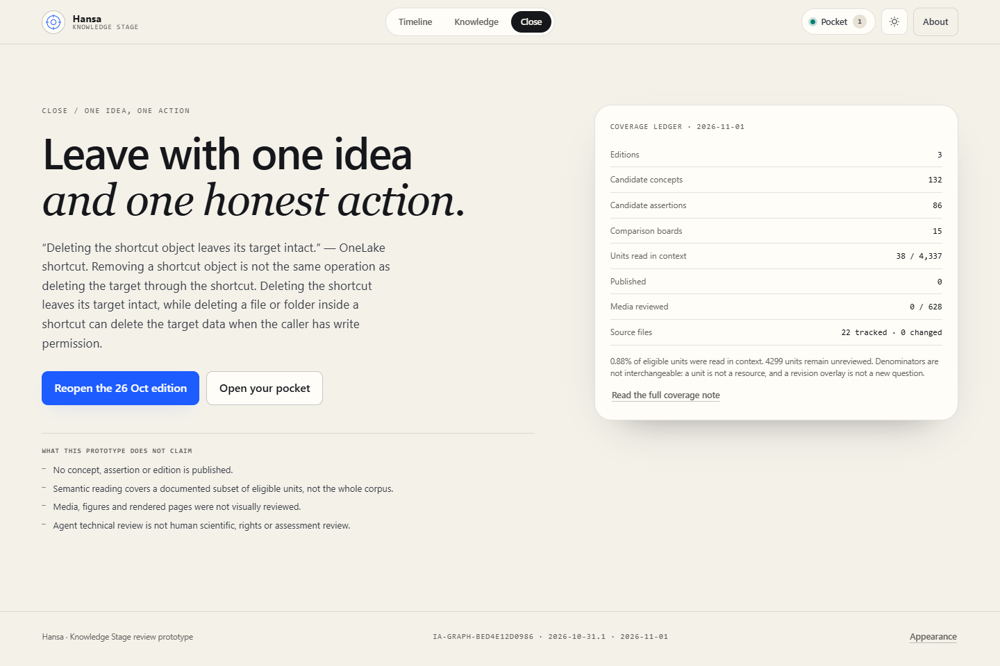
9 · Closing ledger
One remembered idea, an eight-row coverage ledger and a concrete way back to the edition. The stage ends with a decision, not an endless graph.
Data class Candidate review State 8 ledger rows Proves A concise close with a return path
-
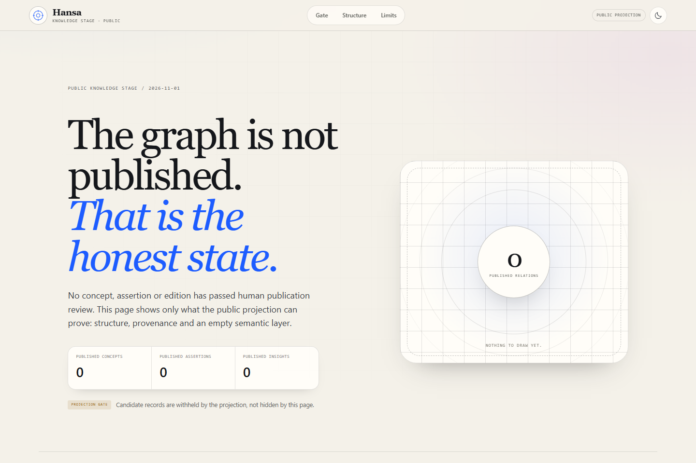
9b · Public sparse-state alternative
The separate public artifact: the same editorial language, zero published records, four unmet gate conditions, and no review payload loaded at all.
Data class Public projection State 0 concepts · 0 assertions · 0 insights Proves Physical public/review separation
Six keyframes
Timeline · Dealer · Field, in both presets
-
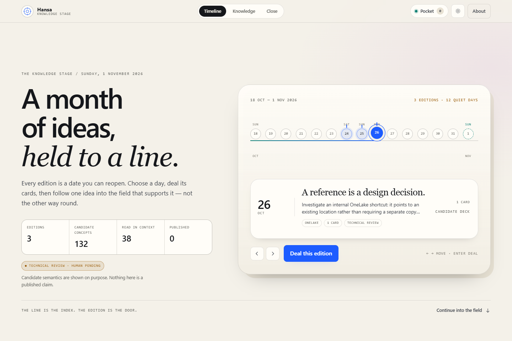
01 · Timeline, light
Warm paper surface, serif entry, mono metadata.
-

02 · Dealer, light
Card hand, reader and provenance in one frame.
-
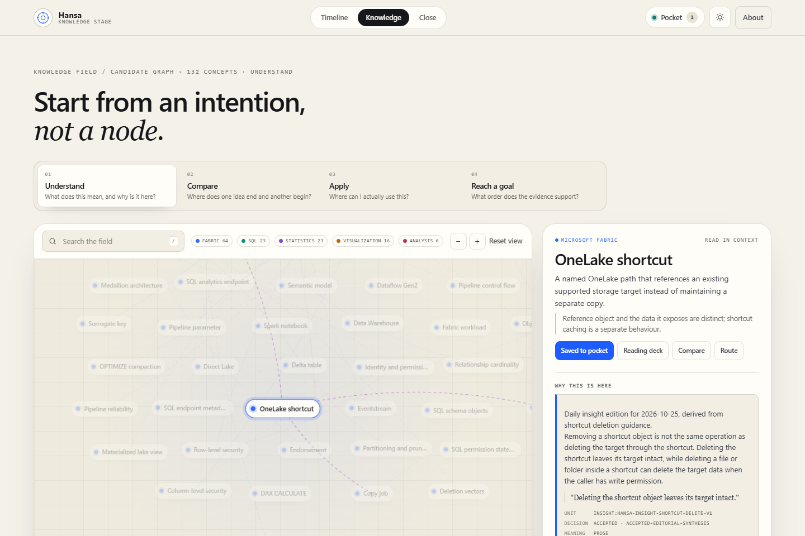
03 · Field, light
Selected concept, neighbourhood and inspector.
-
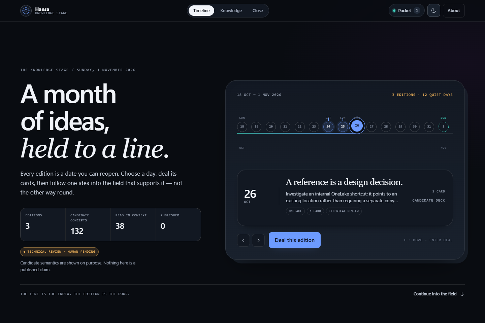
04 · Timeline, dark
Same tokens, inverted surface, unchanged hierarchy.
-
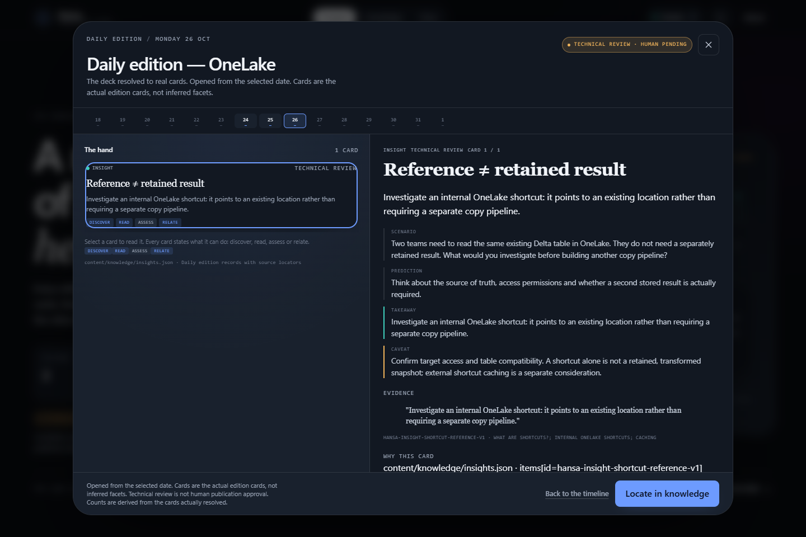
05 · Dealer, dark
Card and reader contrast preserved without a second theme system.
-
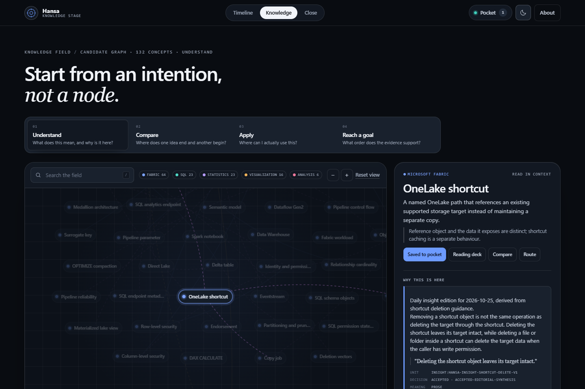
06 · Field, dark
Domain colour and edges hold up on the dark surface.
Motion evidence
Sampled stills, not proof of interpolation
| Motion | Kind | Frames | What it shows |
|---|---|---|---|
| Handoff scrub | Frame sequence | handoff-000 · handoff-050 · handoff-100 |
Computed progress 0 / 0.5 / 1, token opacity 1 / 0.7 / 0 |
| Reduced motion | Static equivalent | reduced-motion-handoff |
No sticky scrub, no orbit, text immediately visible, handoff height 540 < viewport |
| Timeline → Dealer → graph → resource → return | Frame sequence | seq-01 … seq-05 |
Locate opens the field; a resource route reports itself; the timeline stays one scroll away |
| Understand → Compare → cancel | Frame sequence | seq-06 … seq-08 |
Compare is reversible without losing the selected concept |
| Rapid interrupted expansion | Frame sequence | seq-09 · seq-10 |
Three selections settle on the last request; no stale panel or console error |
| Keyboard modal escape | Frame sequence | seq-11 · seq-12 |
Escape closes the Dealer, releases scroll lock and returns focus to the opener |
What these frames do not prove
Read before quoting any frame
- No human review. 38 of 4,337 eligible units have an agent reading (0.88%). Zero records are published. A frame showing a claim is not evidence that the claim is correct.
- No accessibility audit. Keyboard paths, focus return and reduced motion are exercised, but no screen-reader or contrast-conformance audit has been run.
-
No integration. Scope stayed at M0–M5. The prototype is not mounted at
/or/prototype-c/, and no application route resolves from here. - Partial coverage. 27 of 132 concepts have a comparison board; 99 of 132 have an application destination; 728 eligible units remain reason-coded unmapped.
- Local state only. Pocket, thread and self-report live in this browser profile. Nothing is synced, published or transferred.